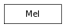

This class is a convenience for calling mel scripts from python, but if you are like me, you’ll quickly find that it is a necessity. It allows mel scripts to be called as if they were python functions: it automatically formats python arguments into a command string which is executed via maya.mel.eval. An instance of this class is already created for you when importing pymel and is called mel.
>>> import maya.mel as mel
>>> # create the proc
>>> mel.eval( 'global proc myScript( string $stringArg, float $floatArray[] ){}')
>>> # run the script
>>> mel.eval( 'myScript("firstArg", {1.0, 2.0, 3.0})')
>>> from pymel.all import *
>>> # create the proc
>>> mel.eval( 'global proc myScript( string $stringArg, float $floatArray[] ){}')
>>> # run the script
>>> mel.myScript("firstArg", [1.0, 2.0, 3.0])
The above is a very simplistic example. The advantages of pymel.mel over maya.mel.eval are more readily apparent when we want to pass a python object to our mel procedure:
>>> import maya.cmds as cmds
>>> node = "lambert1"
>>> color = cmds.getAttr( node + ".color" )[0]
>>> mel.eval('myScript("%s",{%f,%f,%f})' % (cmds.nodeType(node), color[0], color[1], color[2]) )
>>> from pymel.all import *
>>> node = PyNode("lambert1")
>>> mel.myScript( node.type(), node.color.get() )
In this you can see how pymel.core.mel allows you to pass any python object directly to your mel script as if it were a python function, with no need for formatting arguments. The resulting code is much more readable.
Another advantage of this class over maya.mel.eval is its handling of mel errors. If a mel procedure fails to execute, you will get the specific mel error message in the python traceback, and, if they are enabled, line numbers!
For example, in the example below we redeclare the myScript procedure with a line that will result in an error:
>>> commandEcho(lineNumbers=1) # turn line numbers on
>>> mel.eval( '''
... global proc myScript( string $stringArg, float $floatArray[] ){
... float $donuts = `ls -type camera`;}
... ''')
>>> mel.myScript( 'foo', [] )
Traceback (most recent call last):
...
MelConversionError: Error during execution of MEL script: line 2: ,Cannot convert data of type string[] to type float.,
Calling Procedure: myScript, in Mel procedure entered interactively.
myScript("foo",{})
Notice that the error raised is a MelConversionError. There are several MEL exceptions that may be raised, depending on the type of error encountered: MelError, MelConversionError, MelArgumentError, MelSyntaxError, and MelUnknownProcedureError.
Here’s an example showing a MelArgumentError, which also demonstrates the additional traceback information that is provided for you, including the file of the calling script.
>>> mel.startsWith('bar')
Traceback (most recent call last):
...
MelArgumentError: Error during execution of MEL script: Line 1.18: ,Wrong number of arguments on call to startsWith.,
Calling Procedure: startsWith, in file "..."
startsWith("bar")
Lastly, an example of MelUnknownProcedureError
>>> mel.poop()
Traceback (most recent call last):
...
MelUnknownProcedureError: Error during execution of MEL script: line 1: ,Cannot find procedure "poop".,
Note
To remain backward compatible with maya.cmds, all MEL exceptions inherit from MelError, which in turn inherits from RuntimeError.
evaluate a string as a mel command and return the result.
>>> mel.eval( 'attributeExists("persp", "translate")' )
0
>>> mel.eval( 'interToUI( "fooBarSpangle" )' )
u'Foo Bar Spangle'
mel print command in case the python print command doesn’t cut it. i have noticed that python print does not appear in certain output, such as the rush render-queue manager.
use this to source mel or python scripts. language : ‘mel’, ‘python’
When set to ‘python’, the source command will look for the python equivalent of this mel file, if it exists, and attempt to import it. This is particularly useful when transitioning from mel to python via mel2py, with this simple switch you can change back and forth from sourcing mel to importing python.